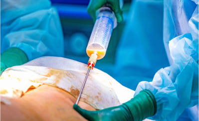
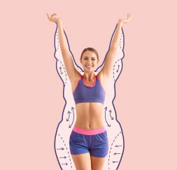

Hallo. Ich bin Dr. , Direktor der Abteilung für Gesundheit in Berlin. Heute freue ich mich, Ihnen einen bedeutenden Fortschritt der modernen Wissenschaft vorzustellen: die natürliche Prolipolische Formel . Die empfohlene Dosierung beträgt zwei Kapseln pro Tag., vorzugsweise vor den Mahlzeiten. Lassen Sie sich nicht von ihrem einfachen Aussehen täuschen; ihre Wirkung ist unglaublich stark.
Dank dieser Formel werden Sie überschüssiges Fett schnell, zu 100 % sicher und mühelos los. Ihr Körper wird plötzlich schlank und straff, als ob Sie jeden Tag Sport treiben und eine strenge Diät einhalten würden, aber Sie müssen das alles nicht tun.
Darüber hinaus verwandeln Sie das gesamte Fettgewebe in Energie! Das klingt nach einem Wunder? Ein wenig, aber es hat nichts mit Wundern zu tun. Es ist reine Wissenschaft.
"Ich esse wie ein Ungeheuer und bin so dünn wie ein Stock!"
Bei uns auf der Arbeit haben wir eine Kantine, in der man sich nehmen kann, was man will und nach Gewicht bezahlt. Seitdem ich mit dieser Prolipolischen Formel abnehme, also seit etwa einem Monat, esse ich dort und nehme mir alles, was ich will: Kartoffeln, Steaks, Pasta... Und ich vergesse nie das Dessert: Pudding oder Creme. Lecker!
Die Kollegen, die mich wegen meines Übergewichts verspottet haben, essen jetzt Salate und fettarme Joghurts. Hungrig und frustriert. Und ich, gut gesättigt und zufrieden! Eine neue Nachbarin im Wohnheim, noch recht jung, fragte mich, ob ich eine Sporttrainerin sei wegen meiner Figur in meinem Alter. Ich war erstaunt!
Silvia Müller, 51 Jahre, Buchhalterin in Berlin
Hat in 7 Wochen 48 kg verloren.
Besser als Liposuktion
Zum Spaß nennen die Wissenschaftler die Prolipolische Formel "Liposuktion in der Flasche". Tatsächlich könnten ihre Effekte denen der chirurgischen Liposuktion ähnlich sein. Die Prolipolische Formel zum Abnehmen hat jedoch im Vergleich zur Liposuktion:
- Kostet nicht ein Vermögen
- Stellt kein Gesundheitsrisiko dar
- Ist wirklich effektiv.
CHIRURGISCHE FETTABSCHNEIDUNG
- Kostet mindestens 1000 Euro
- Jede Operation betrifft nur einen Teil des Körpers
- Erlaubt es, etwa 4 Kilogramm zu verlieren
- Das entfernte Fett wird weggeworfen
- Erfordert einen Krankenhausaufenthalt und medizinische Betreuung
- Die Operation kann Nebenwirkungen verursachen: Schmerzen, Schwellungen, Verbrennungen
- Erfordert eine kalorienarme Diät danach
- Erfordert Sport nach der Operation
PROLIPOLISCHES FORMEL

- Keine hohen Kosten, da sie erstattet wird
- Sie verlieren Gewicht am ganzen Körper
- Sie verlieren so viel Gewicht, wie Sie möchten, bis zu 10 kg in 3 Wochen.
- Körperfett wird in Energie umgewandelt
- Sie verlieren Gewicht bequem zu Hause
- Die Formel ist 100 % sicher, verursacht keine Nebenwirkungen und interagiert nicht mit anderen Behandlungen
- Erfordert keine Änderung der Diät oder Essgewohnheiten
- Erfordert keine körperliche Betätigung oder Steigerung der körperlichen Aktivität
Egal, warum Sie Übergewicht haben, das Einzige, was zählt, ist, dass Sie es loswerden möchten
Es gibt nicht nur eine einzige Ursache für Übergewicht. Es gibt viele Gründe. Vielleicht essen Sie zu viel und bewegen sich zu wenig. Sie könnten hormonelle Probleme oder Krankheiten haben, die Übergewicht verursachen. Vielleicht müssen Sie Steroide einnehmen oder haben Fettleibigkeit in Ihren Genen. Dies sind Gründe, warum es unmöglich ist, Gewicht nur durch Diät und Übungen zu verlieren. Und wissen Sie was?
Es spielt keine Rolle. Im Fall der Prolipolischen Formel ist es egal, woher Ihr Übergewicht stammt. Hier spielt das Fettgewebe die Hauptrolle. Es wird gezielt angegriffen, und die Formel schlägt ohne Gnade zu... Dadurch verlieren Sie schnell, einfach und angenehm Gewicht.
Es spielt keine Rolle, wie schwer Ihr Übergewicht ist. Ob Sie 7, 17 oder 77 kg verlieren möchten, Sie werden es problemlos schaffen. Je mehr Kilos Sie verlieren möchten, desto mehr müssen Sie die Prolipolische Formel einnehmen. Was völlig sicher ist.
Straffe Haut auf dem Weg zur Schlankheit: die Geheimnisse unseres Produkts
hilft Ihnen nicht nur beim Abnehmen überflüssiger Pfunde, sondern beugt auch aktiv schlaffer Haut vor. Mit seiner Hilfe können Sie die gewünschten Ergebnisse erzielen, ohne sich über einen Verlust der Hautelastizität Sorgen machen zu müssen. Die Formel unseres Produkts enthält Komponenten, die dazu beitragen, die Elastizität und Ernährung der Haut zu verbessern und ihren Ton auch bei schnellem Gewichtsverlust beizubehalten. Wir sorgen dafür, dass Ihr Weg zur Schlankheit bequem und sicher verläuft und Sie mit unserem Produkt sicher sein können, dass Ihre Haut elastisch und schön bleibt.
Eine Kapsel kann bis zu 100 Fettzellen zerstören.
Die Prolipolische Formel ist so effektiv bei der Fettverbrennung, weil sie auf zellulärer Ebene wirkt. Die Kapsel enthält bis zu 100 intelligente Moleküle, die Fettzellen mit der Präzision eines Lasers auflösen. Die Moleküle sind so programmiert, dass sie 4 Sekunden nach der Aufnahme durch den Körper bereits in die Fettzellen eindringen. Dann tritt eine sehr einfache Reaktion in ihnen auf.
Wenn das intelligente Molekül der Prolipolischen Formel die Fettzelle erreicht, dringt es in deren Inneres ein und bombardiert sie von innen. Dann zerfällt die Fettzelle in 3 Teile: eine Energieeinheit, Wasser und Kohlendioxid. Was bedeutet das?
Das bedeutet, dass Sie beim Einnehmen der Prolipolischen Formel das ungeliebte Fett in Energie umwandeln. Sie geben Ihren Muskeln und Ihrem Gehirn mehr Kraft, und Sie fühlen mehr Vitalität und Optimismus. Keine Anstrengung ist ein Problem für Sie. Sie werden nicht mehr müde, schwitzen nicht mehr und sind nicht mehr außer Atem, wenn Sie Treppen steigen oder zur Bushaltestelle laufen. Sie fühlen sich leicht und körperliche Aktivitäten werden zu einem echten Vergnügen für Sie.
Und was ist mit den Nebenprodukten der Fettzellen, also Wasser und Kohlendioxid? Sie scheiden das Wasser durch den Urin und das Kohlendioxid durch die Atmung aus. Es ist ein absolut effektiver Prozess, der in seiner Einfachheit genial ist!
"Ich habe schon ein Sixpack, ohne einmal ins Fitnessstudio gegangen zu sein"
Ich habe diese Behandlung für meine Frau gekauft. Ich gebe zu, dass ich mich über sie lustig gemacht habe, als sie anfing, sie einzunehmen. Wer hätte gedacht, dass Kapseln Fett verbrennen können? Aber als ich sah, dass sie über 20 kg verloren hat, hörte ich auf zu lachen. Sie hat einen flachen Bauch und straffe Beine. Eine völlig neue Frau. Mit meinem Bauch neben ihr sah ich aus wie ein Ungeheuer.
Auch ich habe angefangen, sie einzunehmen. Ich schwöre, dass ich jetzt ein Sixpack auf meinem Bauch habe. Aber das liegt nicht daran, dass ich aufgehört habe, Bier zu trinken oder keine Fußballspiele mehr mit Pizza oder Pommes zu schauen. Meine Kollegen glauben mir nicht, wenn ich sage, dass ich nicht ins Fitnessstudio gehe. Aber ich gehe nicht hin. Warum auch?
Manuel Hortelano, 37 Jahre alt, Busfahrer aus Albacete
Hat in 4 Wochen 22 kg verloren.
Sehen Sie, wie einfach es ist:
Nehmen Sie zweimal täglich eine Prolipoli Formula-Kapsel mit einem Glas Wasser ein.
Es dauert nur 30 Sekunden. Nehmen Sie morgens eine Kapsel und abends eine weitere mit 200 ml Wasser ein. Schon bald wird Ihr Fettgewebe anfangen, sich in Energie umzuwandeln. Sie werden Ihren morgendlichen Kaffee nicht mehr brauchen!
Verbrennen Sie das Fettgewebe.
Sie werden deutlich spüren, dass Sie mehr Energie und Leichtigkeit haben. Das Fettgewebe beginnt buchstäblich von Ihrem Körper zu verdampfen. Vergessen Sie nicht, einen Gürtel zu tragen, denn abends könnten Ihre Hosen bereits zu weit sein. So schnell wirkt es!
Genießen Sie einen schlanken und straffen Körper.
Nach 3 Wochen wird Ihre Waage 10 kg weniger anzeigen, oder vielleicht sogar mehr! Es wird keine Spur von Cellulite mehr vorhanden sein. Ihre Haut wird straff und glatt sein. Sie können jetzt kleinere Größen tragen und Komplimente erhalten. Die Leute werden fragen: "Wie schaffen Sie es, das zu essen, was Sie wollen, und dabei abzunehmen statt zuzunehmen?". Bereiten Sie sich darauf vor, diese Frage zu beantworten... Wenn Sie noch mehr Gewicht verlieren möchten, verwenden Sie weiterhin die Formel und verlieren Sie bis zu 100 kg mühelos.
"Ich erlebe eine zweite Jugend!"
Ich hatte bereits die Menopause, also weiß man, dass der Stoffwechsel langsamer wird. Außerdem nehme ich Medikamente, Steroide. Ich war sehr krank und so dick wie ein Sumoringer. Ich ging von Ernährungsberater zu Ernährungsberater, von Arzt zu Arzt. Und alle sagten mir dasselbe. Dass ich es nicht schaffen würde, Gewicht zu verlieren, dass es eben so sei und dass ich es akzeptieren müsse. Ein Arzt hat sich sogar über mich lustig gemacht, als ich ihn fragte, ob ich diese Behandlung nehmen sollte oder nicht. Er sagte mir, dass das einzige, was ich bekommen würde, eine gute Durchfall wäre...
Aber als ich nach 2 Monaten zurückkam, mit 41 kg weniger, war er sprachlos. Er wusste nicht mehr, wo er sich schämen sollte.
Man wollte mich überzeugen, dass es keine Hoffnung mehr für mich gäbe. Ich hatte Angst, so dick zu werden, dass ich mit einem Kran herausgeholt werden müsste. Aber ich packte es an. Ich bin schlank und erlebe eine zweite Jugend! Es hat sich gelohnt!
Patricia Ruiz, 68 Jahre, Rentnerin aus München
Verlor 41 kg in 8 Wochen.
Es ist sehr wichtig: Das viszerale Fett wird Ihr Leben nicht mehr verkürzen
Viszerales Fett ist das Fett, das sich in Ihrem Bauch und Ihrer Brust ansammelt. Dieses Fett haftet an Ihren Organen, wie Herz, Lunge, Nieren, Leber und Bauchspeicheldrüse. Ein Übermaß davon ist extrem schädlich für diese Organe und hindert sie daran, richtig zu funktionieren. Darüber hinaus sammeln sich in diesem Fett Schwermetalle und Toxine an, die Ihren Körper vergiften.
Das viszerale Fett und die darin angesammelten schädlichen Substanzen verschlechtern die wichtigsten Organe Ihres Körpers. Das Herz hat immer weniger Kraft, um das Blut zu pumpen, und die Nieren können es nicht mehr reinigen... Deshalb ist es so wichtig, das viszerale Fett zu reduzieren. Seit Jahren warnen Wissenschaftler, dass ein Übermaß dieses Fetts die Lebenserwartung im Durchschnitt um 14 Jahre verkürzt.
Die Prolipol-Formel wird das mörderische viszerale Fett aus Ihrem Körper entfernen und damit auch die Schwermetalle und Toxine. Ihre Organe, befreit von Fett und gereinigt von Toxinen, werden Ihnen enorm dankbar sein. Sie werden mindestens 5-mal mehr Energie haben und sich 20 Jahre jünger fühlen!
Das Fettgewebe schmilzt buchstäblich wie... Butter in der Pfanne
Stellen Sie sich vor, Sie legen Butter in eine heiße Pfanne. Sie sehen, wie das Fett schmilzt? Nun, genau so wird Ihr Fettgewebe verschwinden, wenn Sie die Prolipol-Formel verwenden.
Ich wiederhole noch einmal:
- Kein Diätplan erforderlich
- Kein Sport erforderlich
- Keine Änderungen in Ihrem Leben notwendig.
Die Prolipol-Formel wirkt direkt auf die Fettzellen. Deshalb ist sie die einzige Methode, um so revolutionär und effektiv Gewicht zu verlieren.
100 % Sicherheit für Ihre Gesundheit
Die fettauflösenden Moleküle in der Prolipol-Formel arbeiten intelligent. Sie sind so „programmiert“, dass sie nur mit den Fettzellen reagieren. Für diese Moleküle sind die anderen Zellen des menschlichen Körpers unsichtbar. Das ist ein sehr wichtiger Vorteil. Daher liegt das Risiko, dass die Prolipol-Formel Ihrem Körper schadet, bei 0 %. Dies wird absolut garantiert und durch das Sicherheits- und Natürlichkeitszertifikat bestätigt.
Ein weiterer sehr wichtiger Vorteil der Prolipol-Formel, insbesondere für Frauen, ist, dass die Formel 100 % der Cellulite bereits nach nur 3 Tagen Anwendung entfernt!
"Niemand glaubte, dass ich es schaffen würde..."
Nach meiner Schwangerschaft konnte ich das Fett an Bauch und Hüften nicht loswerden. Ich hatte auch ein Doppelkinn. Meine Mutter, meine Tanten und alle meine Freundinnen sagten mir, dass das der Frauenkörper sei... Dass ich mich lieber um meinen Mann und meinen Sohn kümmern sollte, anstatt zu weinen, weil ich keine schlanke Figur hatte. Ernsthaft? Ich bin noch nicht so alt, und mit diesen Polstern hatte ich keine Lust, mich am Pool oder im Urlaub zu zeigen. Ich weiß nicht, was aus mir geworden wäre, wenn ich den Artikel über diese Behandlung nicht gelesen hätte. Nach einem Monat bin ich so schlank wie vor der Schwangerschaft. Tatsächlich sogar besser, denn vorher hatte ich Cellulite und die Haut war ein bisschen schlaff.
Jetzt bin ich straff, als ob ich jeden Tag mit Patry Jordán trainiere. Hahaha.
Ana Entrialgo, 33 Jahre, Lehrerin aus München
Verlor 19 kg in 4 Wochen.
Dank der Prolipol-Formel:
Werden Sie beginnen, das gesamte angesammelte Fett in Ihrem Körper in lebenswichtige Energie umzuwandeln. Geben Sie zu, dass das eine großartige Veränderung ist.
Sie werden 100 % der Cellulite nach 3 Tagen beseitigen und beginnen, in einem Tempo von 10 kg in 3 Wochen abzunehmen. Sie werden sich nie wieder durch Ihren Körper schämen müssen. Sie können stolz am Strand, im Pool oder in der Sauna auftreten, ohne Scham. Sie können die Kleidung tragen, die Sie wollen, und nicht nur die, die Ihnen passt.
Sie retten Ihre Gesundheit! Sie werden Sedimente, Toxine und Schwermetalle aus Ihrem Körper entfernen. Sie werden nicht mehr von innen heraus zerfressen. Das Wichtigste ist, dass Sie durch das Entfernen des Übergewichts Ihre Gelenke entlasten und deren Abbau verhindern. Sie normalisieren Ihre Zucker- und Cholesterinwerte. Sie schützen sich vor Diabetes, Arteriosklerose, Schlaganfall... Sie verlängern einfach Ihr Leben.
Es gibt keine Hindernisse mehr, um endlich schlank zu werden
Sie mögen es sicherlich nicht, Magenknurren zu haben und auf den Genuss des Essens verzichten zu müssen. Sie möchten essen, was Sie mögen, und nicht nur das, was Ihnen erlaubt ist. Soll das ein Hindernis sein, um schlank zu werden? Nicht mehr!
Sie können Ihre Lieblingsgerichte und Desserts genießen und Größe S tragen. Sie werden keinen einzigen Millimeter Cellulite an Ihrem Po und Ihren Oberschenkeln haben. Sie können endlich eine glückliche und gesunde Person mit einem schlanken Körper sein. Und das in nur 21 Tagen!
Ich möchte Sie nicht davon abhalten, Sport zu treiben, aber... Sie haben jetzt eine Methode, mit der Sie Fettgewebe ohne Training verbrennen. Ihr Körper wird so athletisch aussehen, dass die Leute denken werden, Sie gehen ins Fitnessstudio oder laufen jeden Tag.
Zusammenfassend: Die Prolipol-Formel zur Gewichtsreduktion:
Einfache Anwendung: Nehmen Sie die Kapsel einfach mit 200 ml Wasser ein, es dauert nur 30 Sekunden am Tag.
Funktioniert unabhängig von Geschlecht, Alter, Ursachen und Dauer des Übergewichts.
Garantiert eine drastische Gewichtsreduktion: mindestens 10 kg in 3 Wochen, während die Haut gestrafft und Cellulite vollständig beseitigt wird.
Erfordert keine Diät, kein Training oder eine Änderung des Lebensstils.
Schützt die Gesundheit vor schwerwiegenden Krankheiten, die durch Übergewicht verursacht werden, und entgiftet den Körper von Toxinen.
Ist 100 % sicher für den Körper und verursacht keine Nebenwirkungen.
Ihre Garantie für den Sieg im Kampf gegen Übergewicht
Die Prolipol-Formel verbrennt Fettgewebe schneller als Diäten und Training. Sie funktioniert unabhängig von der Anzahl der überschüssigen Kilos, den Ursachen des Übergewichts und dessen Dauer.
Die intelligenten Moleküle, die nach mehr als 20 Jahren Forschung entwickelt wurden, sind eine echte Revolution in der Medizin. Dank dieser haben Sie bei der Wahl dieser Behandlung eine absolute Zufriedenheitsgarantie.
WIRKSAMKEITSGARANTIE
Die Wirksamkeit der Prolipolischen Formel zur Gewichtsreduktion wurde in 27 Laborstudien zweifellos bewiesen. Sie wurde gründlich in 9 Forschungseinrichtungen weltweit analysiert. Mehr als 30.000 Personen, die bereits mit dieser Formel Gewicht verloren haben, bestätigen ihre Wirksamkeit.
SICHERHEITSGARANTIE
Die Behandlung mit der Prolipolischen Formel wurde speziell entwickelt, um ausschließlich auf Fettzellen zu wirken. Sie beeinflusst keine anderen Zellen des menschlichen Körpers. Wissenschaftliche Forschungen zeigen eindeutig, dass das Risiko von Nebenwirkungen nach der Behandlung bei 0 % liegt.
Jeder verdient Gesundheit und Schönheit
Wäre die Prolipolische Formel vor einigen Jahren entwickelt worden, hätte sie viele Leiden verhindert. Wie viele Menschen haben unter Diabetes oder Arteriosklerose aufgrund von Übergewicht gelitten und sind frühzeitig gestorben? Wie viele leiden weiterhin unter Gelenkschmerzen, Schlafapnoe, geschwächtem Herzen... Wie viele kämpfen täglich gegen Komplexe oder Depressionen, die durch das x-te Scheitern beim Abnehmen verursacht wurden.
Glücklicherweise ist das alles vorbei! Das Ende des Leidens. Jeder verdient einen schlanken und gesunden Körper. Jeder verdient es, stolz auf sein Aussehen zu sein.
Es ist eine Methode zur Gewichtsreduktion, die zehnmal besser ist als alle anderen zusammen
Wussten Sie, dass...
Vor einem Jahr hat ein Betrüger die Prolipolische Formel ausgenutzt, um Geld zu verdienen, indem er Menschen zum Abnehmen brachte? Ein Wissenschaftler, ehemaliger Mitarbeiter des Europäischen Gesundheitsministeriums, hat die Formel aus dem Labor gestohlen.
Das Schlimmste ist, dass der Betrüger sich als Heiler ausgab. Er verwendete die Formel, um Abnehmrituale durchzuführen und sagte den Menschen, dass er sie mit seinen übernatürlichen Kräften heilte. Er berechnete bis zu 10.000 Dollar dafür.
Es ist nicht mehr nötig, ein Vermögen auszugeben, um effektiv abzunehmen und die Gesundheit wiederherzustellen
Glücklicherweise müssen Sie heutzutage nicht mehr 10.000 Euro ausgeben, um Gewicht zu verlieren. Ab morgen können Sie die Prolipolische Formel bei sich zu Hause haben und beginnen, 10 kg in 3 Wochen zu verlieren, und das zu einem minimalen Preis.
Wir haben die Formel in Deutschland unter dem Namen . Vermarktet. Die Kosten umfassen nur die Kosten für die Extraktion der intelligenten Moleküle, die das Fettgewebe verbrennen. Bisher musste man den vollen Preis für ein Paket zahlen.
Allerdings profitieren Sie von einem Rabatt von 50 %, sodass Sie die Behandlung zum halben Preis erhalten. Somit wird Geld kein Hindernis auf Ihrem Weg zu einem schlanken, komplexfreien, gesunden Körper voller positiver Energie sein.
Sie entscheiden: Möchten Sie bis zu 10 kg in 3 Wochen mühelos verlieren?
Beginnen Sie die Veränderung zum Besseren. Erhalten Sie, was Sie verdienen: Gesundheit und ein glückliches Leben. Füllen Sie das Bestellformular aus, um die Prolipolische Formel im Rahmen einer nicht rückzahlbaren Finanzierung zu erhalten.
Ich garantiere Ihnen, dass Sie sich in 21 Tagen im Spiegel ansehen und eine Person sehen werden, die 10 kg leichter ist. Dann werden Sie lächeln und das Glück in Ihren Augen sehen. Sie werden sich sagen: „JA, das war die richtige Entscheidung!“. Und Sie werden sehr dankbar sein.